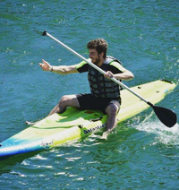

En la foto podemos observar una de las tantas experiencias del profesorado de educación física en el año 2017. Fue una actividad en la Laguna Escondido de Tristan Suárez, en GBA Sur.
Inmensamente agradecido con el grupo que me tocó para vivir esa y todas las experiencias que tuvimos en el transcurso de la carrera, altamente recomendable tanto como carrera y como empleo por lo que devuelve a uno como persona el trabajar con niños y jóvenes en progreso y ayudarlos a tener un día a día más llevadero a través del juego.
Sin embargo es importante resaltar la seguridad y responsabilidad que requiere llevar a cabo actividades al aire libre en un ámbito educativo y estatal de esta magnitud, se requiere un dominio de grupo claro y a su vez, no todos los grupos son aptos para todas las actividades que se puedan presentar.
Esperemos que con el tiempo mis habilidades con HTML y CSS mejores ^^